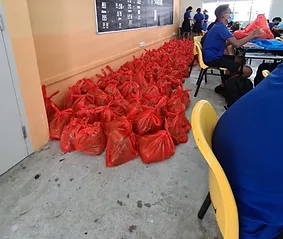

Experience
This is a list of experiences I have gone through within the field which I believe has given me the necessary skills to excel at this course. I believe these experiences show how well-vested I am and invested in this field, as well as the reasoning as to why I wish to pursue further education in this course.
-
North Vista Primary Infocomm Club Member - 2016-2019
I was a member of my Primary School Infocomm Club as I had interested in IT and the CCA had caught my eye. In the three years I was in the CCA, I picked up basic Drone and micro:bit experience, as well as participated in a competition in which our team won in a category. Being in this CCA nurtured my interested in the field of IT and allowed me to gain more life skills such as taking intiative and working with my teammates.
-
Serangoon Secondary Infocomm Club Member - 2020-2023
I became a member of my Secondary School Infcomm Club, choosing it as my first choice in CCA as I wished to continue developing my skills and interest in the field. As such, I was able to pick up a wide range of skills during the four years I have been in the CCA, from Lego Mindstorms Experience and Leadership to Critical Thinking and Cooperation as our instructor gave us challenging tasks that we were instructed to solve on our own. I was also able to participate in a wide variety of competitions during this period, sparking my competitiveness and encouraging me to work and develop myself further.

-
Serangoon Secondary Infocomm Club Executive Committee Member - 2022-2023
After three years of being in my Secondary School Infcomm Club, I chose to join the Executive Committee as a Secondary One mentor in order to lead them and guide them towards improving themselves and allowing them to be able to seek help if the instructor was not present. By doing so, I was able to develop my leadership skills further, as well as be able to step out of my own comfort zone by teaching the Secondary 1s. This also allowed me to reflect upon my own skills and to take the time out of my day to improve my skills in regards to my Lego Mindstorms Experience, encouraging self-development.
-
Applied Learning Programme - 2020-2021
During my time in Secondary One and Secondary Two, I participated in the Applied Learning Programme organised by Singapore Polytechnic. This programme gave me further experience in drone programming and knowledge, and also encouraged critical thinking as we were posed a number of challenges that we had to solve, furthering my critical thinking skills.
-
Values-in-Action Programme - 2020-2023
During my time in Serangoon Secondary School, I participated in the Values-in-Action Programme organised by our school which seeked to help the community, personally accumulating more than 30 hours in regards to the Programme. By doing so, I believe I was able to gain an understanding of how the people around us struggle and how we can help out, as well as showing how many in the community can help one another to foster a sense of harmony and unity.
During Secondary One, the theme was regarding "Serving my household", in which I helped out around the house by doing chores and aided my parents, allowing me to gain a sense of how much they work and deal with every day. Through that, I believe I gained more of a sense of empathy towards my family and friends.
During Secondary Two, the theme was regarding "Helping Others in the Community", in which our class decided to interact with the Elderly at a Senior Centre. We were able to entertain them and allow them to have enjoyable experiences, as did we. I further developed my sense of empathy and was able to gain a sense of harmony amongst the community.
During Secondary Three, the theme was "Bless-A-Block", in which our class was assigned a block with low-income families that we gave out bags of necessities to. We gave out food and household items that we believed would help them out and allievate their financial burdens, even if it was only a little bit. Through this, I believe I picked up leadership as I was able to lead my fellow classmates to distribute tasks and get everything done within the given deadline.
During Secondary Four, the theme was "Raising Awareness for an Organisation", in which our class decided to raise awareness for an animal shelter. We did so by organising a bake sale and going around to each class and giving them a quiz on animals in Singapore, spreading awareness while raising funds for a good cause. I was able to develop my skill of teamwork as I worked together with a group of people to efficiently head over to classes and quiz them within the allocated timings, taking pictures.
